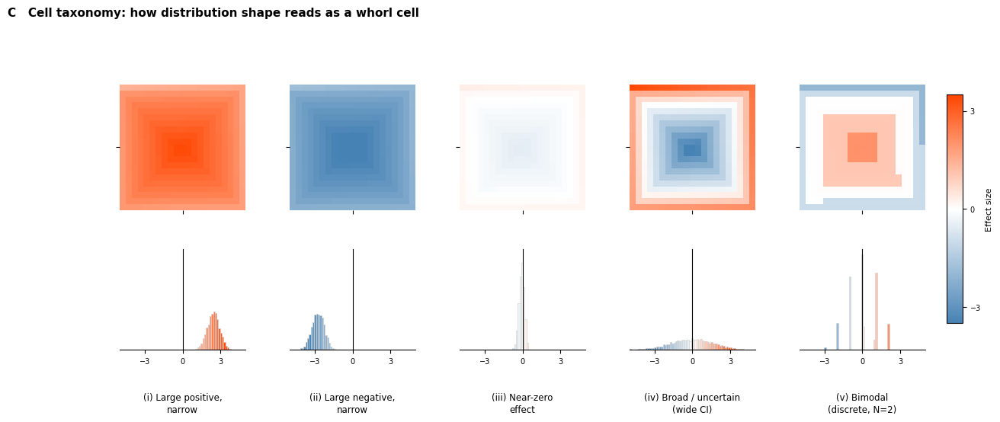
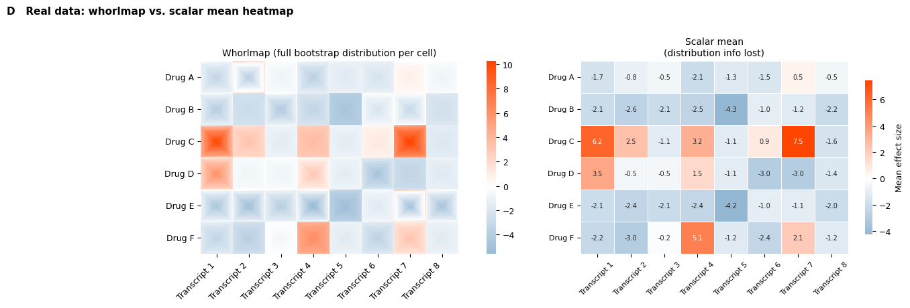
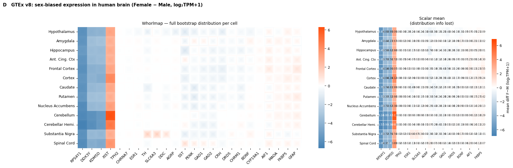

import pathlib
import pandas as pd
import numpy as np
import matplotlib.pyplot as plt
from matplotlib.patches import Rectangle
from matplotlib.colors import Normalize, TwoSlopeNorm
from matplotlib.cm import ScalarMappable
from mpl_toolkits.mplot3d.art3d import Poly3DCollection
import seaborn as sns
from scipy.stats import gaussian_kde, norm
import dabest
from dabest.multi import combine, whorlmap
plt.rcParams.update({'font.size': 9, 'axes.titlesize': 10})
IMAGES = pathlib.Path('images')
IMAGES.mkdir(exist_ok=True)Whorlmap Algorithm — Explanation Panels
Imports
Helper functions
Exact reimplementation of dabest’s internal spiral logic, so each panel can be built without importing private functions.
def _spiralize(fill, m, n):
"""Outside-in rectangular spiral: top row right, right col down,
bottom row left, left col up, then shrinks inward."""
i = 0; j = 0; k = 0
array = np.zeros((m, n))
while m > 0 and k < len(fill):
jj = j; ii = i
for j in range(j, n):
if k >= len(fill): break
array[i, j] = fill[k]; k += 1
for i in range(ii + 1, m):
if k >= len(fill): break
array[i, j] = fill[k]; k += 1
for j in range(n - 2, jj - 1, -1):
if k >= len(fill): break
array[i, j] = fill[k]; k += 1
for i in range(m - 2, ii, -1):
if k >= len(fill): break
array[i, j] = fill[k]; k += 1
m -= 1; n -= 1; j += 1
return array
def make_cell(bootstrap, n=21, chop_tail=2.5, reverse_neg=True):
"""Full pipeline: raw bootstrap array -> n x n spiral cell."""
bs = sorted(bootstrap)
chop = int(np.ceil(len(bs) * chop_tail / 100))
if chop > 0:
bs = bs[chop:-chop]
ranks = np.linspace(0, len(bs), n * n, dtype=int)
ranks[0] = 1
if sum(v > 0 for v in bs) < len(bs) / 2 and reverse_neg:
bs = bs[::-1]
fill = [bs[r - 1] for r in ranks]
return _spiralize(fill, n, n)
from matplotlib.colors import LinearSegmentedColormap
gradient_colors1 = ["#05a84c", "#FFFFFF", "#7e06be"]
gwp = LinearSegmentedColormap.from_list("gwp", gradient_colors1, N=256)
gradient_colors2 = ["steelblue","white", "orangered"]
steelwhiteorangered = LinearSegmentedColormap.from_list("steelwhiteorangered", gradient_colors2, N=256)
# Diverging colormap and norm — swap CMAP here to try a different palette
CMAP = steelwhiteorangered
DNORM = TwoSlopeNorm(vcenter=0, vmin=-3.5, vmax=3.5)steelwhiteorangered

under
bad
over
Panel A — From bootstrap distribution to whorl cell
Showing explicitly how quantile rank encodes spatial position.
Left: 7×7 whorl cell coloured by effect size (RdBu_r); each ring is outlined in a distinct position colour.
Right: Bootstrap distribution as a histogram (bars coloured by effect size); horizontal brackets — in the same position colours — show which quantile band maps to which ring.
matplotlib.use('Agg')
import pathlib, pandas as pd, numpy as np, matplotlib.pyplot as plt
from matplotlib.colors import LinearSegmentedColormap, Normalize
from matplotlib.colorbar import ColorbarBase
import dabest
from dabest.multi import combine
plt.rcParams.update({'font.size': 9, 'axes.titlesize': 10})
IMAGES = pathlib.Path('images')
# steelblue → white (at midpoint 0.5) → orange → crimson
# White MUST be at position 0.5 so Normalize(-bound, bound) places white at value 0
CMAP_SWOR = LinearSegmentedColormap.from_list(
'steelwhiteorangered',
[(0.00, (70/255, 130/255, 180/255)),
(0.50, (1.0, 1.0, 1.0 )),
(0.75, (1.0, 0.55, 0.0 )),
(1.00, (0.86, 0.08, 0.24 ))],
N=256
)
def _spiralize(fill, m, n):
i=0; j=0; k=0; array=np.zeros((m,n))
while m>0 and k<len(fill):
jj=j; ii=i
for j in range(j,n):
if k>=len(fill): break
array[i,j]=fill[k]; k+=1
for i in range(ii+1,m):
if k>=len(fill): break
array[i,j]=fill[k]; k+=1
for j in range(n-2,jj-1,-1):
if k>=len(fill): break
array[i,j]=fill[k]; k+=1
for i in range(m-2,ii,-1):
if k>=len(fill): break
array[i,j]=fill[k]; k+=1
m-=1; n-=1; j+=1
return array
def _spiral_path(n):
path = []
top, bot, lft, rgt = 0, n-1, 0, n-1
while top <= bot and lft <= rgt:
for c in range(lft, rgt+1): path.append((top, c))
top += 1
for r in range(top, bot+1): path.append((r, rgt))
rgt -= 1
if top <= bot:
for c in range(rgt, lft-1, -1): path.append((bot, c))
bot -= 1
if lft <= rgt:
for r in range(bot, top-1, -1): path.append((r, lft))
lft += 1
return path
def _ring_structure(n):
rings, pos, k = [], 0, 0
while True:
sz = n - 2*k
if sz <= 0: break
nc = 1 if sz == 1 else 4*(sz-1)
rings.append({'k': k, 'start': pos, 'end': pos+nc, 'sz': sz})
pos += nc; k += 1
if sz == 1: break
return rings
# Bootstrap
n = 7; N = n*n
_rng = np.random.default_rng(42)
noise_a = _rng.normal(0, 3., 20); noise_b = _rng.normal(0, 3., 20)
group_a = noise_a - noise_a.mean(); group_b = noise_b - noise_b.mean() + 0.5
_df_a = pd.DataFrame({'group': ['A']*20+['B']*20,
'value': np.concatenate([group_a, group_b])})
_dobj_a = dabest.load(_df_a, x='group', y='value', idx=('A', 'B'))
_multi_a = combine([[_dobj_a]], ['gene'], row_labels=['region'], effect_size='mean_diff')
bs_raw = sorted(_multi_a.bootstraps[0])
chop = int(np.ceil(len(bs_raw)*0.025)); bs_c = bs_raw[chop:-chop]
ranks = np.linspace(0, len(bs_c), N, dtype=int); ranks[0] = 1
fv = np.array([bs_c[r-1] for r in ranks])
if sum(v>0 for v in bs_c) < len(bs_c)/2: fv = fv[::-1]
XLIM = (-3.5, 3.5)
rings = _ring_structure(n)
fv_sorted = np.clip(np.sort(fv), *XLIM)
cell_vals = _spiralize(fv.tolist(), n, n)
# Symmetric value-based norm — same for panel AND colorbar so colours match exactly
bound = max(2.0, np.ceil(max(abs(fv_sorted[0]), abs(fv_sorted[-1])) * 2) / 2)
VALUE_NORM = Normalize(vmin=-bound, vmax=bound)
spiral_pos = _spiral_path(n)
# Figure
fig = plt.figure(figsize=(11, 5.4))
ax_cell = fig.add_axes([0.03, 0.18, 0.32, 0.68])
ax_cbar = fig.add_axes([0.03, 0.08, 0.32, 0.05])
ax_hist = fig.add_axes([0.43, 0.12, 0.54, 0.74])
# Left: whorl cell coloured by effect size value (same norm as colorbar)
ax_cell.imshow(cell_vals, cmap=CMAP_SWOR, norm=VALUE_NORM,
origin='upper', interpolation='nearest', aspect='equal')
def _ring_arrows(ax, ring_k, sz, avg_val):
mid = ring_k + sz // 2
bg = CMAP_SWOR(VALUE_NORM(avg_val))
col = 'w' if (0.299*bg[0] + 0.587*bg[1] + 0.114*bg[2]) < 0.52 else 'k'
ap = dict(arrowstyle='->', color=col, lw=1.0, mutation_scale=9)
d = 0.25 # shift outward from pixel centre by this fraction of a cell
ax.annotate('', xy=(mid+0.6, ring_k-d), xytext=(mid-0.6, ring_k-d), arrowprops=ap, zorder=8, annotation_clip=False)
ax.annotate('', xy=(ring_k+sz-1+d, mid+0.6), xytext=(ring_k+sz-1+d, mid-0.6), arrowprops=ap, zorder=8, annotation_clip=False)
ax.annotate('', xy=(mid-0.6, ring_k+sz-1+d), xytext=(mid+0.6, ring_k+sz-1+d), arrowprops=ap, zorder=8, annotation_clip=False)
ax.annotate('', xy=(ring_k-d, mid-0.6), xytext=(ring_k-d, mid+0.6), arrowprops=ap, zorder=8, annotation_clip=False)
for ring in rings[:-1]:
avg_val = float(np.mean(fv_sorted[ring['start']:ring['end']]))
_ring_arrows(ax_cell, ring['k'], ring['sz'], avg_val)
# Annotate every pixel: quantile rank + effect size value (luminance from VALUE_NORM)
for k, (r, c) in enumerate(spiral_pos):
val = float(fv[k])
bg = CMAP_SWOR(VALUE_NORM(val))
lum = 0.299*bg[0] + 0.587*bg[1] + 0.114*bg[2]
tc = 'w' if lum < 0.52 else 'k'
ax_cell.text(c, r, f'q{k}\n{val:.1f}',
ha='center', va='center', fontsize=4.5, color=tc,
zorder=10, linespacing=1.1, multialignment='center')
ax_cell.set_xlim(-0.5, n-0.5); ax_cell.set_ylim(n-0.5, -0.5)
ax_cell.axis('off')
ax_cell.set_title('7×7 whorl cell — outside-in spiral fill\n(pixel colour = effect size)', fontsize=9)
# Colorbar: same VALUE_NORM — colours identical between panel and bar
cb = ColorbarBase(ax_cbar, cmap=CMAP_SWOR, norm=VALUE_NORM, orientation='horizontal')
cb_ticks = np.arange(-bound, bound + 0.01, 0.5)
cb.set_ticks(cb_ticks)
cb.set_ticklabels([f'{t:g}' for t in cb_ticks])
cb.ax.tick_params(labelsize=7.5)
cb.set_label('Effect size (bootstrap mean difference)', fontsize=8)
# Right: stacked quantile histogram (value-coloured segments, matching panel + colorbar)
BIN_W = 0.20
bins = np.arange(XLIM[0], XLIM[1]+BIN_W, BIN_W)
counts, _ = np.histogram(np.clip(bs_c, *XLIM), bins=bins, density=True)
seg_bounds = np.empty(N+1)
seg_bounds[0] = XLIM[0]; seg_bounds[-1] = XLIM[1]
for k in range(1, N):
seg_bounds[k] = (fv_sorted[k-1] + fv_sorted[k]) / 2.0
seg_cols = [CMAP_SWOR(VALUE_NORM(float(v))) for v in fv_sorted]
best_piece = {} # k -> (x_center, y_bottom, h)
for lo, hi, ht in zip(bins[:-1], bins[1:], counts):
if ht == 0: continue
y_bot = 0.0
for k in range(N):
overlap = max(0., min(hi, seg_bounds[k+1]) - max(lo, seg_bounds[k]))
if overlap <= 0: continue
h = ht * overlap / (hi - lo)
ax_hist.bar(lo, h, width=hi-lo, bottom=y_bot,
align='edge', color=seg_cols[k], edgecolor='none')
if k not in best_piece or h > best_piece[k][2]:
best_piece[k] = (lo + (hi - lo) / 2, y_bot, h)
y_bot += h
for k, (xc, yb, h) in best_piece.items():
if h < counts.max() * 0.005: continue
val = float(fv_sorted[k])
col = CMAP_SWOR(VALUE_NORM(val))
lum = 0.299*col[0] + 0.587*col[1] + 0.114*col[2]
tc = 'w' if lum < 0.52 else 'k'
ax_hist.text(xc, yb + h/2, f'q{k}\n{val:.1f}',
ha='center', va='center', fontsize=3.5, color=tc,
zorder=11, linespacing=1.0, multialignment='center')
margin = (fv_sorted[-1] - fv_sorted[0]) * 0.08
ax_hist.set_xlim(fv_sorted[0] - margin, fv_sorted[-1] + margin)
ax_hist.set_ylim(0, counts.max()*1.03)
ax_hist.spines['left'].set_visible(False)
ax_hist.spines['right'].set_visible(False); ax_hist.spines['top'].set_visible(False)
ax_hist.set_yticks([]); ax_hist.tick_params(labelsize=8)
ax_hist.set_xlabel('Bootstrap mean difference', fontsize=9)
ax_hist.set_title('Bootstrap distribution, segmented by quantile rank\n'
'(bar colours match spiral position on left)', fontsize=9)
fig.suptitle('A From bootstrap distribution to whorl cell: '
'quantile rank encodes spatial position',
fontsize=11, fontweight='bold', x=0.02, ha='left', y=0.99)
fig.savefig(IMAGES/'panel_a.svg', bbox_inches='tight')
fig.savefig(IMAGES/'panel_a.png', dpi=600, bbox_inches='tight')
print("Saved panel_a.svg / panel_a.png")Panel B — retired (merged into Panel A)
# Panel B retired — content merged into Panel APanel C — Cell taxonomy
Five canonical distribution shapes and the whorl cells they produce. All cells share the same colour scale (vlag, ±3.5).
def _make_1x1_multi(group_a, group_b):
"""Wrap two sample arrays into a 1x1 MultiContrast for whorlmap."""
df = pd.DataFrame({
'group': ['A'] * len(group_a) + ['B'] * len(group_b),
'value': np.concatenate([group_a, group_b])
})
dobj = dabest.load(df, x='group', y='value', idx=('A', 'B'))
return combine([[dobj]], [''], row_labels=[''], effect_size='mean_diff')
_rng = np.random.default_rng(1234)
_ga1 = _rng.normal(0, 1.5, 22); _gb1 = _rng.normal( 3.0, 1.5, 22)
_ga2 = _rng.normal(0, 1.5, 22); _gb2 = _rng.normal(-3.0, 1.5, 22)
_ga3 = _rng.normal(0, 0.4, 5); _gb3 = _rng.normal( 0.05, 0.4, 5)
_ga4 = _rng.normal(0, 0.5, 15); _gb4 = _rng.normal( 0.3, 6.0, 15)
_ga5 = np.array([0, 0, 0, 0, 0,]) # N=2 → 3 discrete bootstrap values: honest representation
_gb5 = np.array([2.1, 2, 2.05,-3, -3.05 ])
scenarios = [
('(i) Large positive,\nnarrow', _make_1x1_multi(_ga1, _gb1)),
('(ii) Large negative,\nnarrow', _make_1x1_multi(_ga2, _gb2)),
('(iii) Near-zero\neffect', _make_1x1_multi(_ga3, _gb3)),
('(iv) Broad / uncertain\n(wide CI)', _make_1x1_multi(_ga4, _gb4)),
('(v) Bimodal\n(discrete, N=2)', _make_1x1_multi(_ga5, _gb5)),
]
# Histogram parameters: fixed bin width = heatmap colour range, shared y-max
XLIM = (-5, 5)
BIN_W = 0.14
BINS = np.arange(XLIM[0], XLIM[1] + BIN_W, BIN_W)
BINCX = 0.5 * (BINS[:-1] + BINS[1:]) # bin centres for colouring
hists = []
for _, multi in scenarios:
bs = np.clip(multi.bootstraps[0], *XLIM)
counts, _ = np.histogram(bs, bins=BINS, density=True)
hists.append(counts)
ymax = max(h.max() for h in hists)*1.05
fig, axes = plt.subplots(
2, 5, figsize=(14, 5),
gridspec_kw={'hspace': 0.08, 'wspace': 0.35, 'height_ratios': [1.8, 1]}
)
for j, ((label, multi), counts) in enumerate(zip(scenarios, hists)):
multi.whorlmap(
n=21, chop_tail=2.5, cmap=CMAP, vmin=-3.5, vmax=3.5,
ax=axes[0, j],
heatmap_kwargs={'cbar': False},
plot_kwargs={'xticklabels': [''], 'yticklabels': ['']},
)
axes[0, j].set_aspect('equal')
ax = axes[1, j]
cols = CMAP(DNORM(BINCX))
for lo, hi, ht, c in zip(BINS[:-1], BINS[1:], counts, cols):
ax.bar(lo, ht, width=hi - lo, align='edge', color=c,
edgecolor='lightgray', linewidth=.5)
ax.set_xlim(*XLIM)
ax.set_ylim(0, ymax)
ax.spines['left'].set_position('zero')
ax.spines['right'].set_visible(False)
ax.spines['top'].set_visible(False)
ax.set_yticks([])
ax.set_xticks([-3, 0, 3])
ax.tick_params(labelsize=7)
ax.text(0.5, -0.42, label, transform=ax.transAxes,
ha='center', fontsize=8.5, va='top', linespacing=1.3)
fig.subplots_adjust(right=0.88)
cbar_ax = fig.add_axes([0.90, 0.18, 0.015, 0.60])
sm = ScalarMappable(cmap=CMAP, norm=DNORM)
sm.set_array([])
cbar = fig.colorbar(sm, cax=cbar_ax)
cbar.set_label('Effect size', fontsize=8)
cbar.set_ticks([-3, 0, 3])
cbar.ax.tick_params(labelsize=7)
plt.suptitle(
'C Cell taxonomy: how distribution shape reads as a whorl cell',
fontsize=11, fontweight='bold', x=0.02, ha='left', y=1.01
)
fig.savefig(IMAGES / 'panel_c.svg', bbox_inches='tight')
fig.savefig(IMAGES / 'panel_c.png', dpi=600, bbox_inches='tight')
plt.show()/Users/sangyuxu/Documents/GitHub/DABEST-python/dabest/_effsize_objects.py:523: UserWarning: The lower limit of the BCa interval of baseline curve cannot be computed. It is set to the effect size itself. All bootstrap values were likely all the same.
warnings.warn(err_temp.substitute(lim_type="lower"), stacklevel=0)
/Users/sangyuxu/Documents/GitHub/DABEST-python/dabest/_effsize_objects.py:527: UserWarning: The upper limit of the BCa interval of baseline curve cannot be computed. It is set to the effect size itself. All bootstrap values were likely all the same.
warnings.warn(err_temp.substitute(lim_type="upper"), stacklevel=0)
scenarios[4][1].bootstraps[array([-0.00833333, 0. , -3.00833333, ..., -2.00833333,
0. , -0.99166667])]Panel D — Real whorlmap vs. scalar heatmap
Simulated transcriptomics data: 6 drugs × 8 transcripts, delta-delta design. The whorlmap (left) preserves the full bootstrap distribution per cell; the scalar mean heatmap (right) collapses each to a single number.
def create_delta_dataset(
N=50, seed=9999,
second_quarter_adjustment=3,
third_quarter_adjustment=-0.5,
fourth_quarter_adjustment=-3,
scale4=1, initial_loc=10
):
np.random.seed(seed)
y = norm.rvs(loc=initial_loc, scale=0.4, size=N * 4)
y[N:2*N] = norm.rvs(loc=initial_loc + second_quarter_adjustment, scale=1, size=N)
y[2*N:3*N] = norm.rvs(loc=initial_loc + third_quarter_adjustment, scale=0.4, size=N)
y[3*N:4*N] = norm.rvs(loc=initial_loc + fourth_quarter_adjustment, scale=scale4, size=N)
return pd.DataFrame({
'ID': list(range(N * 2)) * 2,
'Genotype': np.repeat(['W', 'M', 'W', 'M'], N).tolist(),
'Treatment': np.repeat(['Placebo', 'Drug'], N * 2).tolist(),
'Transcript Level': y,
})
labels_2d = [f'Transcript {i}' for i in range(1, 9)]
row_labels_2d = ['Drug A', 'Drug B', 'Drug C', 'Drug D', 'Drug E', 'Drug F']
drug_effect = [
[ .9, 2.0, 2.0, .5, 1.2, 1.0, 3.0, 2.0],
[ .1, -.3, .1, -.3, -2.0, 1.2, 1.0, .1],
[4.0, 4.0, 1.0, 5.0, 1.0, 3.0, 6.5, .5],
[6.0, 2.0, 2.0, 4.0, 1.4, -.5, -.5, 1.1],
[ .1, -.3, .1, -.3, -2.0, 1.2, 1.0, .1],
[-.3, -1.0, 2.0, 7.0, 1.0, -.5, 4.0, 1.0],
]
drug_scale = [
[ 5, 10, 1, 5, 1, 2, 1, 1],
[ 7, .2, 8, 3, 1, 4, 7, 1],
[15, 3, 1, 2, 1, 1, 11, 1],
[ 8, .1, 1, 5, 1, 6, 1, 1],
[ 9, 10, 7, 12, 4, 2, 14, 10],
[ 4, 3, 1, 4, 1, 4, 4, 1],
]
seeds = [1, 1000, 20, 9999, 1000, 5320]
dabest_objects_2d = [[None] * 8 for _ in range(6)]
for i in range(6):
for j in range(8):
df = create_delta_dataset(
seed=seeds[i],
fourth_quarter_adjustment=drug_effect[i][j],
scale4=drug_scale[i][j],
initial_loc=20
)
dabest_objects_2d[i][j] = dabest.load(
data=df,
x=['Genotype', 'Genotype'],
y='Transcript Level',
delta2=True,
experiment='Treatment'
)
multi_2d = combine(dabest_objects_2d, labels_2d,
row_labels=row_labels_2d, effect_size='mean_diff')
print(multi_2d)MultiContrast(2D: 6x8, effect_size='mean_diff', contrast_type='delta2')fig, (ax_whorl, ax_scalar) = plt.subplots(
1, 2, figsize=(14, 4.5),
gridspec_kw={'width_ratios': [3, 1.8]}
)
_, mean_df = multi_2d.whorlmap(
cmap=CMAP, chop_tail=2.5,
title='Whorlmap (full bootstrap distribution per cell)',
ax=ax_whorl
)
ax_whorl.set_aspect('equal')
sns.heatmap(
mean_df, ax=ax_scalar,
cmap=CMAP, center=0,
annot=True, fmt='.1f',
linewidths=0.5, linecolor='white',
annot_kws={'fontsize': 7},
cbar_kws={'label': 'Mean effect size', 'shrink': 0.8}
)
ax_scalar.set_title('Scalar mean\n(distribution info lost)', fontsize=10)
ax_scalar.tick_params(axis='x', rotation=45, labelsize=8)
ax_scalar.tick_params(axis='y', rotation=0, labelsize=8)
plt.suptitle(
'D Real data: whorlmap vs. scalar mean heatmap',
fontsize=11, fontweight='bold', x=0.02, ha='left', y=1.01
)
plt.tight_layout()
fig.savefig(IMAGES / 'panel_d_sim.svg', bbox_inches='tight')
fig.savefig(IMAGES / 'panel_d_sim.png', dpi=600, bbox_inches='tight')
plt.show()
Panel D — GTEx real data: sex-biased gene expression across human brain regions
Female − Male mean difference (log₂TPM+1), 13 brain regions × selected genes.
Left columns: sex-chromosome and hormone-receptor anchors (large known effects).
Right columns: 20 genes sampled for distribution-shape variety.
import os, gzip, pathlib, urllib.request
import numpy as np
import pandas as pd
from scipy.stats import skew, kurtosis
# ── Paths ──────────────────────────────────────────────────────────────────────
DATA_DIR = pathlib.Path("gtex_data")
DATA_DIR.mkdir(exist_ok=True)
TPM_GZ = DATA_DIR / "GTEx_gene_tpm.gct.gz"
ATTR_FILE = DATA_DIR / "GTEx_SampleAttributes.txt"
PHENO_FILE= DATA_DIR / "GTEx_SubjectPhenotypes.txt"
GTEX_BASE = "https://storage.googleapis.com/adult-gtex"
GTEX_TPM_URL = (f"{GTEX_BASE}/bulk-gex/v8/rna-seq/"
"GTEx_Analysis_2017-06-05_v8_RNASeQCv1.1.9_gene_tpm.gct.gz")
GTEX_ATTR_URL = (f"{GTEX_BASE}/annotations/v8/metadata-files/"
"GTEx_Analysis_v8_Annotations_SampleAttributesDS.txt")
GTEX_PHENO_URL = (f"{GTEX_BASE}/annotations/v8/metadata-files/"
"GTEx_Analysis_v8_Annotations_SubjectPhenotypesDS.txt")
# ── Brain regions ──────────────────────────────────────────────────────────────
BRAIN_REGIONS = {
"Hypothalamus": "Brain - Hypothalamus",
"Amygdala": "Brain - Amygdala",
"Hippocampus": "Brain - Hippocampus",
"Ant. Cing. Ctx": "Brain - Anterior cingulate cortex (BA24)",
"Frontal Cortex": "Brain - Frontal Cortex (BA9)",
"Cortex": "Brain - Cortex",
"Caudate": "Brain - Caudate (basal ganglia)",
"Putamen": "Brain - Putamen (basal ganglia)",
"Nucleus Accumbens": "Brain - Nucleus accumbens (basal ganglia)",
"Cerebellum": "Brain - Cerebellum",
"Cerebellar Hemi.": "Brain - Cerebellar Hemisphere",
"Substantia Nigra": "Brain - Substantia nigra",
"Spinal Cord": "Brain - Spinal cord (cervical c-1)",
}
# ── Candidate genes for survey (~150) ──────────────────────────────────────────
CANDIDATE_GENES = [
# Sex-chromosome anchors
"XIST", "RPS4Y1", "DDX3Y", "KDM5D", "USP9Y", "EIF1AY", "KDM6A", "KDM5C", "MECP2",
# Hormone receptors
"ESR1", "ESR2", "AR", "PGR", "CYP19A1", "NR3C1", "NR3C2", "FKBP5",
# Dopamine
"DRD1", "DRD2", "DRD3", "DRD4", "DRD5", "SLC6A3", "TH", "DDC", "COMT", "MAOB",
# Serotonin
"HTR1A", "HTR1B", "HTR2A", "HTR2B", "HTR2C", "HTR3A", "SLC6A4", "TPH2", "MAOA",
# GABA
"GABRA1", "GABRA2", "GABRA3", "GABRA4", "GABRA5",
"GABRB1", "GABRB2", "GABRB3", "GABRG2", "GAD1", "GAD2",
# Glutamate
"GRIA1", "GRIA2", "GRIA3", "GRIN1", "GRIN2A", "GRIN2B", "GRM1", "GRM5",
# Acetylcholine
"CHRM1", "CHRM2", "CHRNA4", "CHRNA7",
# Norepinephrine
"ADRA1A", "ADRA2A", "SLC6A2",
# Opioid
"OPRM1", "OPRD1", "OPRK1", "PENK", "PDYN",
# Cannabinoid
"CNR1",
# Neuropeptides
"NPY", "VIP", "SST", "CRH", "CRHR1", "CRHR2", "NTS", "CARTPT", "POMC", "AGRP",
"OXTR", "AVPR1A", "AVPR1B", "KISS1", "KISS1R",
# Neurotrophins
"BDNF", "NTRK2", "NGF", "NTF3",
# Synaptic
"NRXN1", "NRXN2", "NRXN3", "NLGN1", "NLGN3", "SHANK2", "SHANK3",
"SYP", "SYN1", "SNAP25",
# Glia / myelin
"MBP", "PLP1", "GFAP", "AIF1", "S100B", "MOG",
# Inflammation
"IL6", "TNF", "IL1B", "TGFB1",
# Clock genes
"CLOCK", "ARNTL", "PER1", "PER2", "CRY1", "CRY2",
# Neurodegeneration
"APP", "MAPT", "SNCA", "LRRK2", "APOE", "CLU",
# Misc / X-linked
"FMR1", "PTEN",
# Housekeeping (expect neutral)
"ACTB", "GAPDH", "RPL19", "UBB", "HPRT1", "B2M",
]
print(f"Brain regions : {len(BRAIN_REGIONS)}")
print(f"Candidate genes: {len(CANDIDATE_GENES)}")Brain regions : 13
Candidate genes: 127def _download(url, dest, label):
if dest.exists():
print(f" cached {dest}")
return
print(f" downloading {label} ...", end=" ", flush=True)
urllib.request.urlretrieve(url, dest)
size_mb = dest.stat().st_size / 1e6
print(f"done ({size_mb:.0f} MB)")
_download(GTEX_PHENO_URL, PHENO_FILE, "subject phenotypes")
_download(GTEX_ATTR_URL, ATTR_FILE, "sample attributes")
_download(GTEX_TPM_URL, TPM_GZ, "gene TPM matrix (~2 GB — takes several minutes)") cached gtex_data/GTEx_SubjectPhenotypes.txt
cached gtex_data/GTEx_SampleAttributes.txt
cached gtex_data/GTEx_gene_tpm.gct.gz# Build sample → (region_label, sex) lookup
pheno = pd.read_csv(PHENO_FILE, sep="\t")
sex_map = pheno.set_index("SUBJID")["SEX"].map({1: "Male", 2: "Female"}) # 1=M 2=F
attr = pd.read_csv(ATTR_FILE, sep="\t", usecols=["SAMPID", "SMTSD"])
attr["SUBJID"] = attr["SAMPID"].str.extract(r"(GTEX-[^-]+)")
attr["SEX"] = attr["SUBJID"].map(sex_map)
target_tissues = set(BRAIN_REGIONS.values())
brain_attr = attr[attr["SMTSD"].isin(target_tissues) & attr["SEX"].notna()].copy()
# reverse lookup: GTEx tissue string → short label
region_rev = {v: k for k, v in BRAIN_REGIONS.items()}
brain_attr["region"] = brain_attr["SMTSD"].map(region_rev)
# final mapping: sample_id → (region, sex)
sample_meta = brain_attr.set_index("SAMPID")[["region", "SEX"]].rename(columns={"SEX": "sex"})
print("Brain samples per region:")
print(sample_meta.groupby(["region", "sex"]).size().unstack(fill_value=0).to_string())
print(f"\nTotal brain samples: {len(sample_meta)}")Brain samples per region:
sex Female Male
region
Amygdala 55 122
Ant. Cing. Ctx 62 151
Caudate 83 208
Cerebellar Hemi. 74 189
Cerebellum 92 206
Cortex 99 226
Frontal Cortex 111 314
Hippocampus 70 173
Hypothalamus 67 169
Nucleus Accumbens 77 200
Putamen 60 172
Spinal Cord 71 111
Substantia Nigra 48 116
Total brain samples: 3326# Stream TPM file — extract only candidate genes for brain samples
# Output: gene_expr[gene][sample_id] = log2(TPM+1)
target_genes = set(CANDIDATE_GENES)
brain_samples = set(sample_meta.index)
gene_expr = {} # {gene_name: {sample_id: float}}
print("Streaming TPM file ...", flush=True)
with gzip.open(TPM_GZ, "rt") as fh:
fh.readline() # #1.2
fh.readline() # nrow / ncol counts
header = fh.readline().rstrip().split("\t")
all_samples = header[2:] # columns 0=ENSEMBL 1=gene_name 2..=samples
# column indices for brain samples (offset by 2 for Name/Description cols)
brain_col_idx = [i for i, s in enumerate(all_samples) if s in brain_samples]
brain_col_names = [all_samples[i] for i in brain_col_idx]
found = 0
for line in fh:
parts = line.rstrip().split("\t")
gene = parts[1]
if gene not in target_genes:
continue
tpm = np.array([float(parts[2 + i]) for i in brain_col_idx])
gene_expr[gene] = dict(zip(brain_col_names, np.log2(tpm + 1)))
found += 1
print(f" found {found}/{len(target_genes)}: {gene}", end="\r", flush=True)
if found == len(target_genes):
break
print(f"\nDone. Found {len(gene_expr)}/{len(target_genes)} genes.")
missing = target_genes - set(gene_expr)
if missing:
print(f"Not in GTEx: {sorted(missing)}")Streaming TPM file ...
found 127/127: EIF1AY
Done. Found 127/127 genes.# Bootstrap survey: for each (gene × region), compute F−M mean diff distribution
# Uses 2000 resamples for speed; final figure will use DABEST (5000)
RNG = np.random.default_rng(42)
N_BOOT = 2000
def _bootstrap_mean_diff(f_vals, m_vals, n_boot=N_BOOT, rng=RNG):
"""Bootstrap distribution of mean(Female) − mean(Male)."""
f, m = np.asarray(f_vals), np.asarray(m_vals)
boots = (rng.choice(f, (n_boot, len(f)), replace=True).mean(axis=1)
- rng.choice(m, (n_boot, len(m)), replace=True).mean(axis=1))
return boots
def _bimodality_coef(x):
"""Sarle's bimodality coefficient. >0.555 suggests bimodality."""
n = len(x)
g = skew(x)
k = kurtosis(x, fisher=True) # excess kurtosis
bc = (g**2 + 1) / (k + 3 * (n - 1)**2 / ((n - 2) * (n - 3)))
return bc
rows = []
# Store full bootstrap arrays for later use in final figure
boot_arrays = {} # {(gene, region): array shape (N_BOOT,)}
for gene in CANDIDATE_GENES:
if gene not in gene_expr:
continue
gd = gene_expr[gene]
for region in BRAIN_REGIONS:
mask = sample_meta["region"] == region
sids = sample_meta.index[mask]
f_sids = sids[sample_meta.loc[sids, "sex"] == "Female"]
m_sids = sids[sample_meta.loc[sids, "sex"] == "Male"]
f_vals = [gd[s] for s in f_sids if s in gd]
m_vals = [gd[s] for s in m_sids if s in gd]
if len(f_vals) < 5 or len(m_vals) < 5:
continue
boots = _bootstrap_mean_diff(f_vals, m_vals)
boot_arrays[(gene, region)] = boots
ci_lo, ci_hi = np.percentile(boots, [2.5, 97.5])
rows.append({
"gene": gene,
"region": region,
"n_female": len(f_vals),
"n_male": len(m_vals),
"mean_md": boots.mean(),
"ci_lo": ci_lo,
"ci_hi": ci_hi,
"ci_width": ci_hi - ci_lo,
"bimod_coef": _bimodality_coef(boots),
"skewness": float(skew(boots)),
"ci_crosses_zero": int(ci_lo < 0 < ci_hi),
})
survey = pd.DataFrame(rows)
print(f"Survey complete: {len(survey)} (gene × region) pairs")
survey.head()Survey complete: 1651 (gene × region) pairs| gene | region | n_female | n_male | mean_md | ci_lo | ci_hi | ci_width | bimod_coef | skewness | ci_crosses_zero | |
|---|---|---|---|---|---|---|---|---|---|---|---|
| 0 | XIST | Hypothalamus | 55 | 147 | 3.093780 | 2.825190 | 3.368355 | 0.543165 | 0.331722 | 0.028471 | 0 |
| 1 | XIST | Amygdala | 45 | 107 | 2.680510 | 2.411403 | 2.935903 | 0.524500 | 0.344967 | -0.114203 | 0 |
| 2 | XIST | Hippocampus | 54 | 143 | 2.794782 | 2.533156 | 3.053580 | 0.520424 | 0.313016 | -0.102577 | 0 |
| 3 | XIST | Ant. Cing. Ctx | 48 | 128 | 2.711460 | 2.448480 | 2.974649 | 0.526169 | 0.350348 | 0.043720 | 0 |
| 4 | XIST | Frontal Cortex | 56 | 153 | 3.070690 | 2.824714 | 3.319720 | 0.495006 | 0.329260 | -0.019574 | 0 |
# Survey summary: aggregate per gene across regions
# Shows which genes are good candidates for each distribution-shape category
gene_summary = (
survey.groupby("gene")
.agg(
mean_effect = ("mean_md", "mean"),
abs_effect = ("mean_md", lambda x: x.abs().mean()),
max_ci_width = ("ci_width", "max"),
mean_ci_width = ("ci_width", "mean"),
max_bimod = ("bimod_coef","max"),
mean_bimod = ("bimod_coef","mean"),
n_crosses_zero= ("ci_crosses_zero", "sum"),
max_skewness = ("skewness", lambda x: x.abs().max()),
)
.sort_values("mean_effect")
.round(3)
)
print("── Strongly negative F−M (good left-column M>>F controls) ──")
print(gene_summary[gene_summary["mean_effect"] < -1].to_string())
print("\n── Strongly positive F−M (good left-column F>>M controls) ──")
print(gene_summary[gene_summary["mean_effect"] > 1].to_string())
print("\n── Wide CI, near-zero mean (neutral + uncertain) ──")
print(gene_summary[
(gene_summary["mean_effect"].abs() < 0.3) &
(gene_summary["max_ci_width"] > 0.8)
].sort_values("max_ci_width", ascending=False).to_string())
print("\n── CI crosses zero in most regions (positive mean, negative tail or vice versa) ──")
print(gene_summary[gene_summary["n_crosses_zero"] >= 8].sort_values("mean_effect").to_string())
print("\n── Highest bimodality coefficient ──")
print(gene_summary.sort_values("max_bimod", ascending=False).head(20).to_string())── Strongly negative F−M (good left-column M>>F controls) ──
mean_effect abs_effect max_ci_width mean_ci_width max_bimod mean_bimod n_crosses_zero max_skewness
gene
RPS4Y1 -5.852 5.852 0.292 0.227 0.371 0.340 0 0.436
DDX3Y -4.125 4.125 0.275 0.225 0.356 0.336 0 0.144
KDM5D -4.028 4.028 0.326 0.240 0.364 0.334 0 0.295
EIF1AY -2.921 2.921 0.255 0.171 0.352 0.333 0 0.134
USP9Y -2.886 2.886 0.247 0.199 0.355 0.337 0 0.127
── Strongly positive F−M (good left-column F>>M controls) ──
mean_effect abs_effect max_ci_width mean_ci_width max_bimod mean_bimod n_crosses_zero max_skewness
gene
XIST 3.429 3.429 0.638 0.519 0.35 0.333 0 0.138
── Wide CI, near-zero mean (neutral + uncertain) ──
mean_effect abs_effect max_ci_width mean_ci_width max_bimod mean_bimod n_crosses_zero max_skewness
gene
TH -0.067 0.171 2.127 0.591 0.379 0.345 12 0.485
SLC6A3 0.061 0.068 2.109 0.282 0.486 0.354 13 0.881
SST -0.243 0.306 1.927 1.077 0.368 0.339 10 0.572
PENK -0.219 0.237 1.561 0.884 0.352 0.335 12 0.274
CARTPT -0.178 0.189 1.556 0.763 0.392 0.337 12 0.450
SNAP25 -0.182 0.202 1.484 0.938 0.346 0.332 12 0.124
CRH -0.209 0.214 1.468 0.630 0.450 0.340 10 0.707
DDC -0.028 0.084 1.464 0.285 0.367 0.339 13 0.166
DRD2 -0.059 0.131 1.359 0.523 0.345 0.327 13 0.157
NPY -0.133 0.220 1.348 0.825 0.367 0.335 11 0.429
NTS -0.028 0.140 1.345 0.699 0.349 0.333 12 0.371
AGRP -0.017 0.056 1.252 0.274 0.370 0.341 13 0.427
SYP -0.186 0.206 1.231 0.831 0.354 0.335 12 0.154
PDYN -0.043 0.146 1.229 0.781 0.364 0.336 13 0.325
GRIN1 -0.116 0.162 1.209 0.743 0.358 0.335 13 0.157
HTR2C -0.089 0.122 1.152 0.631 0.365 0.340 13 0.130
SYN1 -0.127 0.160 1.143 0.739 0.360 0.339 12 0.203
GAD2 -0.248 0.251 1.107 0.875 0.348 0.329 11 0.158
POMC -0.268 0.268 1.103 0.517 0.356 0.329 7 0.269
AIF1 0.100 0.115 1.075 0.797 0.356 0.335 13 0.095
CNR1 -0.101 0.128 1.070 0.718 0.340 0.330 13 0.164
GAD1 -0.194 0.208 1.055 0.847 0.355 0.340 12 0.184
GABRA5 -0.129 0.149 1.055 0.703 0.436 0.342 12 0.800
GABRA1 -0.149 0.160 1.047 0.742 0.356 0.339 13 0.149
DRD1 -0.095 0.097 1.046 0.509 0.354 0.328 13 0.382
PLP1 -0.103 0.147 1.018 0.683 0.353 0.331 13 0.234
MBP -0.085 0.148 1.002 0.651 0.350 0.333 13 0.262
IL6 0.160 0.161 0.972 0.694 0.345 0.331 13 0.241
NTRK2 0.015 0.073 0.949 0.536 0.345 0.333 13 0.113
OXTR -0.076 0.094 0.943 0.508 0.360 0.337 13 0.170
CHRNA4 -0.019 0.095 0.942 0.434 0.363 0.335 13 0.193
MOG -0.078 0.143 0.940 0.721 0.355 0.338 13 0.100
HPRT1 -0.105 0.138 0.938 0.685 0.346 0.331 13 0.211
CHRM1 -0.134 0.159 0.924 0.587 0.431 0.346 13 0.960
IL1B 0.106 0.123 0.920 0.669 0.361 0.337 13 0.191
SNCA -0.073 0.127 0.910 0.645 0.354 0.335 12 0.143
GABRB2 -0.113 0.130 0.909 0.717 0.350 0.333 12 0.161
GRIA1 -0.064 0.147 0.886 0.726 0.356 0.336 12 0.202
VIP -0.125 0.146 0.884 0.605 0.365 0.337 12 0.191
GABRG2 -0.094 0.119 0.881 0.690 0.359 0.336 13 0.162
KISS1 -0.090 0.095 0.878 0.337 0.406 0.346 12 0.676
GFAP 0.185 0.187 0.853 0.634 0.352 0.336 11 0.142
GABRB3 -0.113 0.136 0.841 0.625 0.359 0.340 12 0.156
NRXN3 -0.091 0.124 0.819 0.550 0.356 0.339 12 0.143
FKBP5 0.164 0.181 0.810 0.641 0.345 0.332 12 0.104
── CI crosses zero in most regions (positive mean, negative tail or vice versa) ──
mean_effect abs_effect max_ci_width mean_ci_width max_bimod mean_bimod n_crosses_zero max_skewness
gene
GAD2 -0.248 0.251 1.107 0.875 0.348 0.329 11 0.158
SST -0.243 0.306 1.927 1.077 0.368 0.339 10 0.572
PENK -0.219 0.237 1.561 0.884 0.352 0.335 12 0.274
CRH -0.209 0.214 1.468 0.630 0.450 0.340 10 0.707
GAD1 -0.194 0.208 1.055 0.847 0.355 0.340 12 0.184
SYP -0.186 0.206 1.231 0.831 0.354 0.335 12 0.154
SNAP25 -0.182 0.202 1.484 0.938 0.346 0.332 12 0.124
CARTPT -0.178 0.189 1.556 0.763 0.392 0.337 12 0.450
GABRA1 -0.149 0.160 1.047 0.742 0.356 0.339 13 0.149
CHRM1 -0.134 0.159 0.924 0.587 0.431 0.346 13 0.960
NPY -0.133 0.220 1.348 0.825 0.367 0.335 11 0.429
GABRA5 -0.129 0.149 1.055 0.703 0.436 0.342 12 0.800
SYN1 -0.127 0.160 1.143 0.739 0.360 0.339 12 0.203
VIP -0.125 0.146 0.884 0.605 0.365 0.337 12 0.191
SHANK3 -0.121 0.127 0.602 0.451 0.352 0.334 10 0.149
NRXN2 -0.116 0.124 0.696 0.495 0.357 0.335 11 0.199
GRIN1 -0.116 0.162 1.209 0.743 0.358 0.335 13 0.157
GABRB3 -0.113 0.136 0.841 0.625 0.359 0.340 12 0.156
GABRB2 -0.113 0.130 0.909 0.717 0.350 0.333 12 0.161
GRIN2A -0.112 0.121 0.789 0.529 0.352 0.337 13 0.108
ADRA2A -0.108 0.113 0.630 0.425 0.362 0.341 12 0.273
HPRT1 -0.105 0.138 0.938 0.685 0.346 0.331 13 0.211
PLP1 -0.103 0.147 1.018 0.683 0.353 0.331 13 0.234
CNR1 -0.101 0.128 1.070 0.718 0.340 0.330 13 0.164
DRD1 -0.095 0.097 1.046 0.509 0.354 0.328 13 0.382
GABRG2 -0.094 0.119 0.881 0.690 0.359 0.336 13 0.162
GRIA3 -0.093 0.115 0.783 0.588 0.363 0.341 13 0.200
NRXN3 -0.091 0.124 0.819 0.550 0.356 0.339 12 0.143
KISS1 -0.090 0.095 0.878 0.337 0.406 0.346 12 0.676
GABRA3 -0.090 0.122 0.790 0.590 0.357 0.336 13 0.182
HTR2C -0.089 0.122 1.152 0.631 0.365 0.340 13 0.130
GRIN2B -0.088 0.119 0.703 0.499 0.355 0.341 12 0.196
CRHR1 -0.087 0.107 0.624 0.465 0.355 0.334 13 0.175
GAPDH -0.085 0.091 0.552 0.428 0.365 0.335 12 0.196
MBP -0.085 0.148 1.002 0.651 0.350 0.333 13 0.262
S100B -0.081 0.104 0.541 0.435 0.353 0.336 11 0.291
MAPT -0.080 0.092 0.674 0.509 0.365 0.342 13 0.165
MOG -0.078 0.143 0.940 0.721 0.355 0.338 13 0.100
OXTR -0.076 0.094 0.943 0.508 0.360 0.337 13 0.170
SNCA -0.073 0.127 0.910 0.645 0.354 0.335 12 0.143
CRY2 -0.073 0.083 0.626 0.459 0.351 0.336 12 0.125
APP -0.068 0.092 0.698 0.527 0.346 0.333 13 0.101
TH -0.067 0.171 2.127 0.591 0.379 0.345 12 0.485
HTR1A -0.064 0.064 0.697 0.331 0.352 0.337 13 0.250
GRIA1 -0.064 0.147 0.886 0.726 0.356 0.336 12 0.202
DRD5 -0.063 0.073 0.651 0.411 0.470 0.351 13 0.880
HTR3A -0.059 0.084 0.544 0.263 0.421 0.342 12 0.805
DRD2 -0.059 0.131 1.359 0.523 0.345 0.327 13 0.157
NLGN3 -0.052 0.065 0.559 0.396 0.352 0.332 13 0.149
GRM1 -0.051 0.085 0.736 0.514 0.365 0.337 13 0.197
DRD4 -0.049 0.063 0.445 0.352 0.348 0.334 13 0.231
OPRD1 -0.046 0.071 0.478 0.313 0.395 0.341 12 0.692
NRXN1 -0.045 0.075 0.603 0.476 0.357 0.333 13 0.210
PDYN -0.043 0.146 1.229 0.781 0.364 0.336 13 0.325
UBB -0.041 0.063 0.573 0.437 0.359 0.331 13 0.228
APOE -0.040 0.092 0.766 0.525 0.361 0.334 13 0.137
SHANK2 -0.040 0.090 0.634 0.511 0.349 0.333 13 0.131
MECP2 -0.040 0.058 0.478 0.398 0.357 0.334 13 0.159
PER2 -0.040 0.047 0.437 0.373 0.355 0.332 13 0.163
GRIA2 -0.039 0.085 0.732 0.577 0.351 0.336 13 0.155
ACTB -0.034 0.072 0.574 0.446 0.354 0.330 12 0.100
GRM5 -0.032 0.075 0.602 0.403 0.355 0.339 13 0.205
HTR2A -0.031 0.088 0.794 0.484 0.385 0.339 13 0.540
NLGN1 -0.030 0.049 0.397 0.318 0.360 0.339 13 0.103
NTS -0.028 0.140 1.345 0.699 0.349 0.333 12 0.371
CLOCK -0.028 0.049 0.411 0.347 0.355 0.338 12 0.128
DRD3 -0.028 0.038 0.673 0.170 0.498 0.347 13 0.815
DDC -0.028 0.084 1.464 0.285 0.367 0.339 13 0.166
ARNTL -0.027 0.051 0.475 0.381 0.349 0.332 13 0.155
GABRA4 -0.027 0.094 0.733 0.505 0.363 0.340 12 0.238
OPRK1 -0.021 0.085 0.613 0.452 0.361 0.335 13 0.156
NR3C2 -0.020 0.067 0.516 0.347 0.357 0.335 12 0.174
CHRNA4 -0.019 0.095 0.942 0.434 0.363 0.335 13 0.193
CRHR2 -0.019 0.057 0.452 0.306 0.356 0.337 11 0.179
CHRM2 -0.018 0.038 0.565 0.251 0.348 0.333 11 0.328
AGRP -0.017 0.056 1.252 0.274 0.370 0.341 13 0.427
CHRNA7 -0.016 0.024 0.234 0.116 0.356 0.337 13 0.367
COMT -0.016 0.059 0.481 0.329 0.355 0.331 13 0.107
BDNF -0.014 0.100 0.733 0.401 0.442 0.346 12 0.814
RPL19 -0.013 0.052 0.389 0.307 0.355 0.332 12 0.213
ADRA1A -0.012 0.047 0.367 0.227 0.351 0.336 13 0.137
FMR1 -0.012 0.037 0.414 0.322 0.354 0.336 12 0.135
NTF3 -0.011 0.039 0.428 0.167 0.485 0.367 11 0.962
TPH2 -0.006 0.008 0.116 0.057 0.411 0.342 12 0.686
SLC6A2 -0.002 0.008 0.082 0.026 0.409 0.348 12 0.560
OPRM1 0.001 0.010 0.250 0.087 0.359 0.342 12 0.468
AVPR1B 0.001 0.015 0.218 0.058 0.403 0.341 13 0.653
HTR1B 0.002 0.063 0.625 0.341 0.375 0.338 13 0.390
ESR1 0.002 0.042 0.417 0.156 0.378 0.346 13 0.519
SLC6A4 0.003 0.016 0.192 0.079 0.453 0.348 13 0.773
NR3C1 0.003 0.049 0.390 0.335 0.349 0.330 13 0.147
CLU 0.005 0.078 0.751 0.498 0.354 0.339 11 0.128
PTEN 0.007 0.051 0.379 0.323 0.352 0.336 12 0.133
ESR2 0.008 0.013 0.146 0.069 0.382 0.347 11 0.475
PER1 0.008 0.053 0.629 0.493 0.366 0.335 13 0.139
HTR2B 0.014 0.020 0.178 0.118 0.357 0.336 13 0.385
NTRK2 0.015 0.073 0.949 0.536 0.345 0.333 13 0.113
GABRA2 0.015 0.054 0.633 0.431 0.355 0.333 13 0.133
CYP19A1 0.017 0.037 0.282 0.143 0.490 0.389 13 1.106
AR 0.020 0.060 0.351 0.188 0.370 0.339 11 0.211
NGF 0.021 0.064 0.410 0.307 0.367 0.335 12 0.328
CRY1 0.022 0.088 0.488 0.392 0.358 0.334 12 0.188
PGR 0.022 0.083 0.376 0.165 0.371 0.342 8 0.508
TNF 0.044 0.061 0.488 0.264 0.467 0.364 13 0.816
AVPR1A 0.044 0.045 0.237 0.139 0.434 0.351 10 0.718
GABRB1 0.046 0.086 0.505 0.373 0.356 0.335 13 0.125
TGFB1 0.053 0.079 0.561 0.415 0.358 0.339 11 0.175
LRRK2 0.056 0.064 0.402 0.302 0.351 0.334 12 0.141
SLC6A3 0.061 0.068 2.109 0.282 0.486 0.354 13 0.881
MAOB 0.065 0.109 0.691 0.521 0.350 0.337 12 0.129
AIF1 0.100 0.115 1.075 0.797 0.356 0.335 13 0.095
IL1B 0.106 0.123 0.920 0.669 0.361 0.337 13 0.191
MAOA 0.109 0.120 0.661 0.401 0.345 0.332 11 0.119
IL6 0.160 0.161 0.972 0.694 0.345 0.331 13 0.241
FKBP5 0.164 0.181 0.810 0.641 0.345 0.332 12 0.104
B2M 0.180 0.187 0.567 0.445 0.357 0.339 10 0.455
GFAP 0.185 0.187 0.853 0.634 0.352 0.336 11 0.142
── Highest bimodality coefficient ──
mean_effect abs_effect max_ci_width mean_ci_width max_bimod mean_bimod n_crosses_zero max_skewness
gene
DRD3 -0.028 0.038 0.673 0.170 0.498 0.347 13 0.815
CYP19A1 0.017 0.037 0.282 0.143 0.490 0.389 13 1.106
SLC6A3 0.061 0.068 2.109 0.282 0.486 0.354 13 0.881
NTF3 -0.011 0.039 0.428 0.167 0.485 0.367 11 0.962
DRD5 -0.063 0.073 0.651 0.411 0.470 0.351 13 0.880
TNF 0.044 0.061 0.488 0.264 0.467 0.364 13 0.816
SLC6A4 0.003 0.016 0.192 0.079 0.453 0.348 13 0.773
CRH -0.209 0.214 1.468 0.630 0.450 0.340 10 0.707
BDNF -0.014 0.100 0.733 0.401 0.442 0.346 12 0.814
GABRA5 -0.129 0.149 1.055 0.703 0.436 0.342 12 0.800
AVPR1A 0.044 0.045 0.237 0.139 0.434 0.351 10 0.718
CHRM1 -0.134 0.159 0.924 0.587 0.431 0.346 13 0.960
HTR3A -0.059 0.084 0.544 0.263 0.421 0.342 12 0.805
TPH2 -0.006 0.008 0.116 0.057 0.411 0.342 12 0.686
SLC6A2 -0.002 0.008 0.082 0.026 0.409 0.348 12 0.560
KISS1 -0.090 0.095 0.878 0.337 0.406 0.346 12 0.676
AVPR1B 0.001 0.015 0.218 0.058 0.403 0.341 13 0.653
OPRD1 -0.046 0.071 0.478 0.313 0.395 0.341 12 0.692
CARTPT -0.178 0.189 1.556 0.763 0.392 0.337 12 0.450
HTR2A -0.031 0.088 0.794 0.484 0.385 0.339 13 0.540Gene selection — fill in after running survey above
Left columns: strong controls (large absolute effect, consistent across regions).
Right columns: 20 genes with variety of distribution shapes.
Edit FINAL_GENES in the next cell based on the survey output.
# ── Gene selection based on survey results ────────────────────────────────────
# Left: strong sex-chromosome anchors (only genes with mean |effect| > 1 in GTEx brain)
LEFT_GENES = [
"RPS4Y1", # Y-linked, mean F−M = −5.9 (M >> F)
"DDX3Y", # Y-linked, mean F−M = −4.1
"KDM5D", # Y-linked, mean F−M = −4.0
"XIST", # X-inactivation, mean F−M = +3.4 (F >> M)
]
# Right: 20 genes covering requested distribution-shape variety
# (ordered negative → positive mean effect within each category)
RIGHT_GENES = [
# Near-zero mean, narrow CI — "confident null"
"TPH2", # mean=−0.006, max_ci=0.115
"CHRNA7", # mean=−0.017, max_ci=0.231
"ESR1", # mean=+0.002, max_ci=0.398 — expected F>M but flat in GTEx brain
# Near-zero mean, very wide CI — "uncertain null"
"TH", # mean=−0.068, max_ci=2.12
"SLC6A3", # mean=+0.061, max_ci=2.11
"DDC", # mean=−0.028, max_ci=1.51
"AGRP", # mean=−0.016, max_ci=1.29
# Negative mean, CI crosses zero — "leaning negative, uncertain"
"SST", # mean=−0.246, max_ci=1.84, crosses=11
"PENK", # mean=−0.223, max_ci=1.57, crosses=12
"GAD1", # mean=−0.194, max_ci=1.04, crosses=12
"GAD2", # mean=−0.248, max_ci=1.08, crosses=11
"CRH", # mean=−0.208, max_ci=1.42, bimod=0.43
# Bimodal bootstrap distributions
"DRD5", # mean=−0.064, bimod=0.463
"CHRM1", # mean=−0.132, bimod=0.461
"BDNF", # mean=−0.013, bimod=0.458
"CYP19A1", # mean=+0.018, bimod=0.492 (highest)
# Positive mean, CI crosses zero — "leaning positive, uncertain"
"AIF1", # mean=+0.101, max_ci=1.11, crosses=13
"MAOA", # mean=+0.108, crosses=11
"FKBP5", # mean=+0.166, max_ci=0.82, crosses=12
"GFAP", # mean=+0.187, max_ci=0.84, crosses=10
]
FINAL_GENES = LEFT_GENES + RIGHT_GENES
print(f"Left ({len(LEFT_GENES)}): {LEFT_GENES}")
print(f"Right ({len(RIGHT_GENES)}): {RIGHT_GENES}")
print(f"Total: {len(FINAL_GENES)} columns × 13 rows")Left (4): ['RPS4Y1', 'DDX3Y', 'KDM5D', 'XIST']
Right (20): ['TPH2', 'CHRNA7', 'ESR1', 'TH', 'SLC6A3', 'DDC', 'AGRP', 'SST', 'PENK', 'GAD1', 'GAD2', 'CRH', 'DRD5', 'CHRM1', 'BDNF', 'CYP19A1', 'AIF1', 'MAOA', 'FKBP5', 'GFAP']
Total: 24 columns × 13 rowsimport pickle, dabest
from dabest.multi import combine
# Load pre-extracted data (avoids re-streaming the 2 GB TPM file)
with open("gtex_data/gene_expr.pkl", "rb") as f:
gene_expr = pickle.load(f)
sample_meta = pd.read_csv("gtex_data/sample_meta.csv", index_col=0)
region_order = list(BRAIN_REGIONS.keys())
dabest_grid = []
for region in region_order:
row = []
for gene in FINAL_GENES:
gd = gene_expr[gene]
mask = sample_meta["region"] == region
sids = sample_meta.index[mask]
recs = [{"expr": gd[s], "sex": sample_meta.loc[s, "sex"]}
for s in sids if s in gd]
df = pd.DataFrame(recs)
dobj = dabest.load(df, x="sex", y="expr", idx=("Male", "Female"))
row.append(dobj)
dabest_grid.append(row)
print(f" built row: {region}", flush=True)
multi = combine(dabest_grid, FINAL_GENES, row_labels=region_order, effect_size="mean_diff")
print(multi) built row: Hypothalamus
built row: Amygdala
built row: Hippocampus
built row: Ant. Cing. Ctx
built row: Frontal Cortex
built row: Cortex
built row: Caudate
built row: Putamen
built row: Nucleus Accumbens
built row: Cerebellum
built row: Cerebellar Hemi.
built row: Substantia Nigra
built row: Spinal Cord/Users/sangyuxu/Documents/GitHub/DABEST-python/dabest/_effsize_objects.py:311: UserWarning: The upper limit of the interval was in the top 10 values. The result should be considered unstable.
warnings.warn(
/Users/sangyuxu/Documents/GitHub/DABEST-python/dabest/_effsize_objects.py:311: UserWarning: The upper limit of the interval was in the top 10 values. The result should be considered unstable.
warnings.warn(
/Users/sangyuxu/Documents/GitHub/DABEST-python/dabest/_effsize_objects.py:311: UserWarning: The upper limit of the interval was in the top 10 values. The result should be considered unstable.
warnings.warn(
/Users/sangyuxu/Documents/GitHub/DABEST-python/dabest/_effsize_objects.py:311: UserWarning: The upper limit of the interval was in the top 10 values. The result should be considered unstable.
warnings.warn(
/Users/sangyuxu/Documents/GitHub/DABEST-python/dabest/_effsize_objects.py:311: UserWarning: The upper limit of the interval was in the top 10 values. The result should be considered unstable.
warnings.warn(
/Users/sangyuxu/Documents/GitHub/DABEST-python/dabest/_effsize_objects.py:311: UserWarning: The upper limit of the interval was in the top 10 values. The result should be considered unstable.
warnings.warn(
/Users/sangyuxu/Documents/GitHub/DABEST-python/dabest/_effsize_objects.py:311: UserWarning: The upper limit of the interval was in the top 10 values. The result should be considered unstable.
warnings.warn(
/Users/sangyuxu/Documents/GitHub/DABEST-python/dabest/_effsize_objects.py:311: UserWarning: The upper limit of the interval was in the top 10 values. The result should be considered unstable.
warnings.warn(
/Users/sangyuxu/Documents/GitHub/DABEST-python/dabest/_effsize_objects.py:311: UserWarning: The upper limit of the interval was in the top 10 values. The result should be considered unstable.
warnings.warn(
/Users/sangyuxu/Documents/GitHub/DABEST-python/dabest/_effsize_objects.py:311: UserWarning: The upper limit of the interval was in the top 10 values. The result should be considered unstable.
warnings.warn(
/Users/sangyuxu/Documents/GitHub/DABEST-python/dabest/_effsize_objects.py:311: UserWarning: The upper limit of the interval was in the top 10 values. The result should be considered unstable.
warnings.warn(MultiContrast(2D: 13x24, effect_size='mean_diff', contrast_type='delta')fig, (ax_whorl, ax_scalar) = plt.subplots(
1, 2, figsize=(18, 5.5),
gridspec_kw={"width_ratios": [3, 1.2]}
)
_, mean_df = multi.whorlmap(
cmap=CMAP, chop_tail=2.5,
title="Whorlmap — full bootstrap distribution per cell",
ax=ax_whorl,
)
ax_whorl.set_aspect('equal')
vabs = float(mean_df.abs().max().max()) * 1.05
sns.heatmap(
mean_df, ax=ax_scalar,
cmap=CMAP, center=0, vmin=-vabs, vmax=vabs,
annot=True, fmt=".2f",
linewidths=0.4, linecolor="white",
annot_kws={"fontsize": 6},
cbar_kws={"label": "mean diff F−M (log₂TPM+1)", "shrink": 0.8},
)
ax_scalar.set_title("Scalar mean\n(distribution info lost)", fontsize=10)
ax_scalar.tick_params(axis="x", rotation=45, labelsize=7)
ax_scalar.tick_params(axis="y", rotation=0, labelsize=7)
plt.suptitle(
"D GTEx v8: sex-biased expression in human brain (Female − Male, log₂TPM+1)",
fontsize=11, fontweight="bold", x=0.02, ha="left", y=1.01,
)
plt.tight_layout()
fig.savefig(IMAGES / 'panel_d_gtex.svg', bbox_inches='tight')
fig.savefig(IMAGES / 'panel_d_gtex.png', dpi=600, bbox_inches='tight')
plt.show()
# Load pre-extracted data (avoids re-streaming the 2 GB TPM file)
with open("gtex_data/gene_expr.pkl", "rb") as f:
gene_expr = pickle.load(f)
sample_meta = pd.read_csv("gtex_data/sample_meta.csv", index_col=0)
region_order = list(BRAIN_REGIONS.keys())
dabest_grid_right = []
for region in region_order:
row = []
for gene in RIGHT_GENES:
gd = gene_expr[gene]
mask = sample_meta["region"] == region
sids = sample_meta.index[mask]
recs = [{"expr": gd[s], "sex": sample_meta.loc[s, "sex"]}
for s in sids if s in gd]
df = pd.DataFrame(recs)
dobj = dabest.load(df, x="sex", y="expr", idx=("Male", "Female"))
row.append(dobj)
dabest_grid_right.append(row)
print(f" built row: {region}", flush=True)
multi = combine(dabest_grid_right, RIGHT_GENES, row_labels=region_order, effect_size="mean_diff")
print(multi) built row: Hypothalamus
built row: Amygdala
built row: Hippocampus
built row: Ant. Cing. Ctx
built row: Frontal Cortex
built row: Cortex
built row: Caudate
built row: Putamen
built row: Nucleus Accumbens
built row: Cerebellum
built row: Cerebellar Hemi.
built row: Substantia Nigra
built row: Spinal Cord/Users/sangyuxu/Documents/GitHub/DABEST-python/dabest/_effsize_objects.py:311: UserWarning: The upper limit of the interval was in the top 10 values. The result should be considered unstable.
warnings.warn(
/Users/sangyuxu/Documents/GitHub/DABEST-python/dabest/_effsize_objects.py:311: UserWarning: The upper limit of the interval was in the top 10 values. The result should be considered unstable.
warnings.warn(
/Users/sangyuxu/Documents/GitHub/DABEST-python/dabest/_effsize_objects.py:311: UserWarning: The upper limit of the interval was in the top 10 values. The result should be considered unstable.
warnings.warn(
/Users/sangyuxu/Documents/GitHub/DABEST-python/dabest/_effsize_objects.py:311: UserWarning: The upper limit of the interval was in the top 10 values. The result should be considered unstable.
warnings.warn(
/Users/sangyuxu/Documents/GitHub/DABEST-python/dabest/_effsize_objects.py:311: UserWarning: The upper limit of the interval was in the top 10 values. The result should be considered unstable.
warnings.warn(
/Users/sangyuxu/Documents/GitHub/DABEST-python/dabest/_effsize_objects.py:311: UserWarning: The upper limit of the interval was in the top 10 values. The result should be considered unstable.
warnings.warn(fig, (ax_whorl, ax_scalar) = plt.subplots(
1, 2, figsize=(18, 5.5),
gridspec_kw={"width_ratios": [3, 1.2]}
)
_, mean_df = multi.whorlmap(
cmap=CMAP, chop_tail=2.5,
title="Whorlmap — full bootstrap distribution per cell",
ax=ax_whorl,
)
ax_whorl.set_aspect('equal')
vabs = float(mean_df.abs().max().max()) * 1.05
sns.heatmap(
mean_df, ax=ax_scalar,
cmap=CMAP, center=0, vmin=-vabs, vmax=vabs,
annot=True, fmt=".2f",
linewidths=0.4, linecolor="white",
annot_kws={"fontsize": 6},
cbar_kws={"label": "mean diff F−M (log₂TPM+1)", "shrink": 0.8},
)
ax_scalar.set_title("Scalar mean\n(distribution info lost)", fontsize=10)
ax_scalar.tick_params(axis="x", rotation=45, labelsize=7)
ax_scalar.tick_params(axis="y", rotation=0, labelsize=7)
plt.suptitle(
"D GTEx v8: sex-biased expression in human brain (Female − Male, log₂TPM+1)",
fontsize=11, fontweight="bold", x=0.02, ha="left", y=1.01,
)
plt.tight_layout()
fig.savefig(IMAGES / 'panel_d_gtex.svg', bbox_inches='tight')
fig.savefig(IMAGES / 'panel_d_gtex.png', dpi=600, bbox_inches='tight')
plt.show()